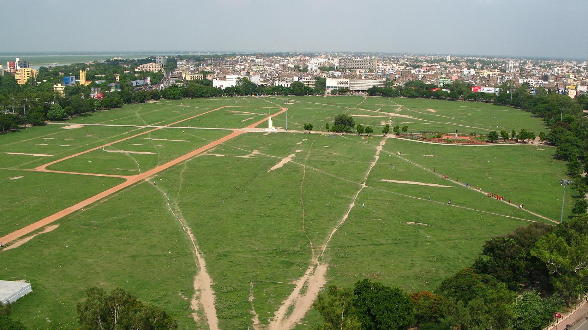

About Patna
Today, Patna is a rapidly developing city with modern infrastructure, universities, hospitals, business centers and important government institutions. The city represents a beautiful combination of ancient heritage and modern growth. Patna is famous for its historical monuments, religious places and tourist attractions such as Golghar, Takht Sri Patna Sahib, Bihar Museum, Patna Museum and Kumhrar Park.
The city has a rich cultural identity with various festivals, traditional arts and local cuisines. Being the gateway to many famous tourist places of Bihar, Patna connects visitors to destinations like Bodh Gaya, Nalanda, Rajgir and Vaishali. With its historical importance and continuous development, Patna plays an important role in the progress and identity of Bihar.
Important Facts
| Category | Information |
|---|---|
| State | Bihar |
| River | Ganga |
| Language | Hindi, Urdu |
| Importance | Administrative Capital |
Tourist Attractions
- Golghar
- Bihar Museum
- Takht Sri Patna Sahib
- Eco Park
- Gandhi Maidan
Educational Institutions
- Patna University
- NIT Patna
- IIT Patna
- Chanakya National Law University